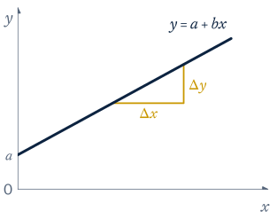
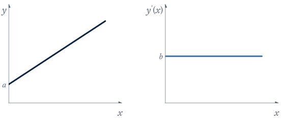
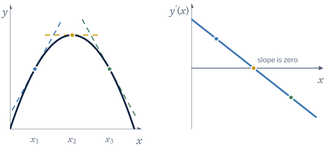
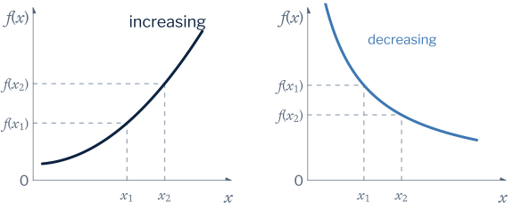

Lesson 2
FIN 30210 Managerial Economics
Jason R. Reed, PhD, University of Notre Dame
\[ y = f(x) \]

\[ \text{Slope} = \frac{\Delta y}{\Delta x} = \frac{y_2 - y_1}{x_2 - x_1} = \frac{f(x_2) - f(x_1)}{x_2 - x_1} \]
The hardest part of this class is the algebra, not the calculus.
\[x^m \cdot x^n = x^{m+n}\]
\[(x^m)^n = x^{mn}\]
\[(xy)^m = x^m y^m\]
\[x^0 = 1\]
\[x^{-m} = \frac{1}{x^m}\]
\[x^{\frac{1}{n}} = \sqrt[n]{x}\]
Most of our optimization analysis will require solving for more than one independent variable. Generally we’ll have two equations and two unknowns, but we could have more.
To solve a linear system of equations, eliminate a variable and reduce the number of equations:
\[ f'(x) = \lim_{h \to 0} \frac{f(x+h) - f(x)}{h} \]
For our purposes, you can begin to equate the derivative with the slope.


Measure the slope of the tangent line at each point. At \(x_2\) the tangent is flat, so the derivative is zero.
Given \(y = f(x) = ax^b\),
\[ \frac{dy}{dx} = f'(x) = bax^{b-1} \]
Given \(u = g(x)\), \(v = h(x)\), and \(y = f(x) = u \pm v = g(x) \pm h(x)\),
\[ \frac{dy}{dx} = f'(x) = \frac{du}{dx} \pm \frac{dv}{dx} \]
Given \(u = g(x)\), \(v = h(x)\), and \(y = f(x) = uv = g(x) \cdot h(x)\),
\[ \frac{dy}{dx} = f'(x) = v\left(\frac{du}{dx}\right) + u\left(\frac{dv}{dx}\right) = u\,h'(x) + v\,g'(x) \]
Given \(y = f(x) = \dfrac{u}{v} = \dfrac{g(x)}{h(x)}\),
\[ \frac{dy}{dx} = f'(x) = \frac{v\left(\frac{du}{dx}\right) - u\left(\frac{dv}{dx}\right)}{v^2} = \frac{h(x)\,g'(x) - g(x)\,h'(x)}{h(x)^2} \]
Given \(y = f(u)\) and \(u = g(x)\), so that \(y = f[g(x)]\),
\[ \frac{dy}{dx} = \left(\frac{dy}{du}\right)\left(\frac{du}{dx}\right) = \left[\frac{df(u)}{du}\right]\left[\frac{dg(x)}{dx}\right] = f'(u) \cdot g'(x) \]
\[ z = f(x, y) \]
Here there are several independent variables. When we take the derivative with respect to one of them, we assume the others aren’t changing.
The notational change is \(\dfrac{\partial f(x, y)}{\partial x}\) in place of \(\dfrac{dy}{dx}\).
\[ z = 3x^2 + \tfrac{1}{2}y^{-4} + 15xy + 100 \]
\[\frac{\partial z}{\partial x} = 6x + 15y\]
\[\frac{\partial z}{\partial y} = -2y^{-5} + 15x\]
Continuing the example, differentiate each first partial again.
\[\frac{\partial^2 z}{\partial x^2} = 6\]
\[\frac{\partial^2 z}{\partial y^2} = 10y^{-6}\]
\[\frac{\partial^2 z}{\partial x\,\partial y} = 15\]
\[\frac{\partial^2 z}{\partial y\,\partial x} = 15\]
For the cross-partial, differentiate \(\partial z / \partial x\) with respect to \(y\), or \(\partial z / \partial y\) with respect to \(x\). Either order gives the same answer.
For profit or utility maximization and cost minimization, this means taking the first derivative of the function, subject to any relevant constraints, and setting the result equal to zero.
If the first derivative of \(f(x)\) at \(x = x_0\) is \(f'(x_0) = 0\), then the value of the function at \(x_0\) is
A maximum
if the derivative changes sign from positive to negative, moving from the immediate left of \(x_0\) to its immediate right
A minimum
if the derivative changes sign from negative to positive, moving from the immediate left of \(x_0\) to its immediate right
Neither
if the derivative has the same sign on both the immediate left and right of \(x_0\)
If the first derivative of \(f(x)\) at \(x = x_0\) is \(f'(x_0) = 0\), then the value of the function at \(x_0\) is
A relative maximum
if the second derivative at \(x_0\) is negative: \(f''(x_0) < 0\)
A relative minimum
if the second derivative at \(x_0\) is positive: \(f''(x_0) > 0\)
Example Find the relative extrema of the function
\[ y = f(x) = x^3 - 12x^2 + 36x + 8 \]
After taking the first derivative, we set the result equal to zero and solve for the relative extremum. Usually, though, we’ll face a maximization or minimization problem with constraints:
\[ \max(\min)\; y = f(x_1, x_2) \quad \text{subject to} \quad k = g(x_1, x_2) \]
There are two methods for solving it:
Substitution plugs the constraint into the objective function, so the optimization is performed on a (slightly) new objective function.
Original problem
\[ \begin{aligned} &\min_{x,y}\; f(x, y) = 30x^2 + 6y^2 - xy \\ &\text{s.t.}\;\; x = 20 - y \end{aligned} \]
After substituting for \(x\)
\[ \min_{y}\; f(y) = 30(20 - y)^2 + 6y^2 - (20 - y)y \]
\[ f(y) = 30(20 - y)^2 + 6y^2 - (20 - y)y = 12{,}000 - 1{,}220y + 37y^2 \]
\[ \frac{df(y)}{dy} = -1{,}220 + 74y = 0 \quad\Rightarrow\quad y^* = \frac{1{,}220}{74} \approx 16.49, \quad x^* = 20 - y^* \approx 3.51 \]
\[ \frac{d^2 f(y)}{dy^2} = 74 > 0 \]
The second derivative is positive, so this extremum is a minimum.
The Lagrange multiplier method creates a new objective function with a new parameter, \(\lambda\), called the shadow price.
\[ \begin{aligned} &\min_{x,y}\; f(x, y) = 30x^2 + 6y^2 - xy \quad \text{s.t.}\;\; 20 = x + y \\[0.4em] &\mathcal{L}(x, y, \lambda) = f(x, y) + \lambda\, g(x, y) = 30x^2 + 6y^2 - xy + \lambda(20 - y - x) \end{aligned} \]
To use this method, you must set the constraint equal to zero. It doesn’t matter whether you move everything to the right or the left.
Technically,
\[ \lambda^*(k) = \frac{\partial \mathcal{L}}{\partial k}, \quad \text{where } k \text{ is the constraint value (here } 20 = x + y\text{, so } k = 20\text{)} \]
What happens to the value of the objective function if \(k\) changes from 20 to 21?
First-order conditions A set of simultaneous equations that we solve for the values of our inputs and \(\lambda\).
Problem 2.1 Find the extremum (max or min) using the substitution method and the Lagrange multiplier method.
\[ U = x_1 x_2 + 2x_1 \quad \text{s.t.} \quad 4x_1 + 2x_2 = 60 \]
\[ \mathcal{L}(x_1, x_2, \lambda) = x_1 x_2 + 2x_1 + \lambda(60 - 4x_1 - 2x_2) \]
\[ \frac{\partial \mathcal{L}}{\partial x_1} = x_2 + 2 - 4\lambda = 0 \]
\[ \frac{\partial \mathcal{L}}{\partial x_2} = x_1 - 2\lambda = 0 \]
\[ \frac{\partial \mathcal{L}}{\partial \lambda} = 60 - 4x_1 - 2x_2 = 0 \]
Solve each condition for λ
\[ \begin{aligned} &\tfrac{1}{4}x_2 + \tfrac{1}{2} = \lambda \\ &\tfrac{1}{2}x_1 = \lambda \\ &\tfrac{1}{2}x_1 = \tfrac{1}{4}x_2 + \tfrac{1}{2} \;\Rightarrow\; x_2 = 2x_1 - 2 \end{aligned} \]
Substitute into the constraint
\[ \begin{aligned} &60 - 4x_1 - 2(2x_1 - 2) = 0 \\ &64 = 8x_1 \;\Rightarrow\; x_1^* = 8 \\ &x_2^* = 2(8) - 2 = 14 \\ &\lambda^* = \tfrac{1}{2}(8) = 4 \end{aligned} \]
Problem 2.2 Use the Lagrange multiplier approach to find the constrained extremum values.
\[ Z = x(y + 4) \quad \text{s.t.} \quad x + y = 8 \]
C. Featherstone, “Lagrange multipliers as shadow prices,” section notes, 2007.
T. J. Webster, Managerial Economics: Theory and Practice, Academic Press, 2003.

Monotonically increasing If \(x_2 > x_1\), then \(f(x_2) > f(x_1)\)
Monotonically decreasing If \(x_2 > x_1\), then \(f(x_2) < f(x_1)\)
Given \(y = \log_e x\): \(\quad \dfrac{dy}{dx} = \dfrac{d(\log_e x)}{dx} = \dfrac{1}{x}\)
Given \(y = e^x\): \(\quad \dfrac{dy}{dx} = \dfrac{d(e^x)}{dx} = e^x\)
Given \(y = f(x)\) and its inverse \(g(y) = f^{-1}(y) = x\): \(\quad g'(y) = \dfrac{dx}{dy} = \dfrac{1}{dy/dx} = \dfrac{1}{f'(x)}\)
Some functions don’t have explicit input components, and the dependent variable may also be functionally related to one or more of the right-hand-side variables. For example, national income:
\[ Y = C + I + G + (X - M) \]
Taking the total derivative gives a differential equation that helps define the functions further:
\[ dY = dC + dI + dG + d(X - M) \]
Let consumption depend on income, \(C = C(Y)\), so that
\[ dY = \left(\frac{dC}{dY}\right) dY + dI + dG + d(X - M) \]
To find \(dY/dI\), assume \(I\) has no relationship to \(G\) or to \(X - M\), but does change \(Y\): \(\;dG = d(X - M) = 0\).
\[ dY = \left(\frac{dC}{dY}\right) dY + dI \]
\[ \frac{dY}{dI} = \frac{1}{1 - \left(\frac{dC}{dY}\right)} \]
Up next: Lesson 3
FIN 30210 Managerial Economics